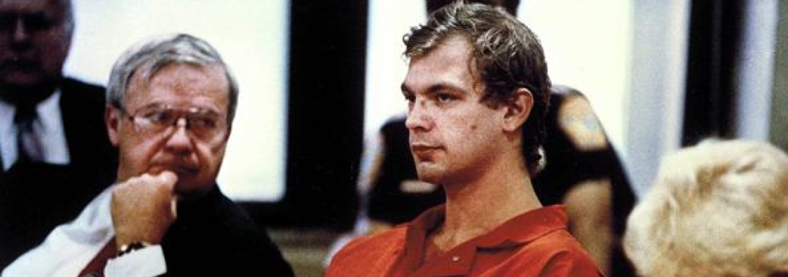

Jeffrey Lionel Dahmer (West Allis, 21 maggio 1960 – Portage, 28 novembre 1994) è stato un serial killer statunitense. Conosciuto come il cannibale di Milwaukee (Milwaukee Cannibal) o il mostro di Milwaukee (Milwaukee Monster), fu responsabile di diciassette omicidi effettuati tra il 1978 e il 1991 con metodi particolarmente cruenti (contemplando atti di violenza sessuale, necrofilia, cannibalismo e squartamento). Fu condannato nel 1992 alla pena dell'ergastoloper poi essere ucciso, due anni dopo, da Christopher Scarver, un detenuto sofferente di schizofrenia.
Biografia
Jeffrey Dahmer nacque il 21 maggio 1960 a Milwaukee, nel Wisconsin, come figlio primogenito di Lionel Harbert Dahmer (1936) e Joyce Annette Flint (1936-2000). Visse, malgrado alcuni problemi di salute dovuti ad un'ernia inguinale, un'infanzia tranquilla fino all'età di sei anni. A partire da quell'età, Dahmer sviluppò un carattere chiuso e apatico, sia per l'eccessiva lontananza di suo padre Lionel a causa dei suoi continui impegni accademici, che per la grave forma di depressione di cui soffriva la madre Joyce, già ipocondriaca da tempo, motivo per cui richiedeva cure costanti e passava gran parte delle sue giornate a letto, ricordando peraltro le numerose liti tra i suoi genitori durante i suoi primi anni.
Quando Joyce partorì per la seconda volta a dicembre, lasciò che fosse Jeffrey a scegliere il nome del suo fratellino, che fu chiamato David. Dal 1968 in poi, il piccolo Jeffrey incominciò a collezionare resti di animali morti che usava seppellire nel bosco situato dietro l'abitazione dei genitori a Bath Township, in Ohio, dove la famiglia si era trasferita pochi mesi prima. Due anni più tardi chiese al padre cosa sarebbe successo alle ossa di pollo qualora fossero state immerse nella candeggina; il padre, orgoglioso di quella che credeva essere una semplice curiosità scientifica del figlio, gli mostrò come sbiancare e conservare ottimamente gli scheletri di animali. Per esempio, nel 1975, Jeffrey decapitò la carcassa di un cane che era stato investito da un'auto, per poi inchiodarne il corpo a un albero e impalarne il teschio su un bastone nel bosco dietro casa sua.
A tredici anni cominciò inoltre a coltivare fantasie sessuali in cui l'oggetto del suo desiderio erano persone morte, e a subire scherzi a scuola.
A partire dai sedici anni iniziò a consumare regolarmente grandi quantità di alcolici nelle ore diurne, a scuola visto come uno studente educato e molto intelligente, malgrado fosse piuttosto silenzioso durante le lezioni. Quando raggiunse la pubertà, Dahmer capì di essere gay, scegliendo tuttavia di non dirlo ai suoi genitori. Nel 1977, si ritrovò a vivere da solo nella vecchia casa di famiglia perché il padre lasciò la famiglia per stabilirsi provvisoriamente in un motel poco distante. La madre e il fratello andarono ad abitare a Chippewa Falls.

Jeffrey Dahmer nel corso degli anni
Il primo omicidio
Il 18 giugno 1978, subito dopo il divorzio dei genitori e in seguito al conseguimento del diploma della scuola superiore, Dahmer mise in atto il suo primo omicidio. La sua prima vittima fu Steven Hicks, un autostoppista di 19 anni. In quell'occasione l'assassino invitò il giovane nella casa dei genitori rimasta vuota, gli offrì una birra, gli fece ascoltare della musica e finì per ucciderlo, colpendolo con un manubrio di 4,5 kg e soffocandolo. Successivamente gli tolse i vestiti, gli si mise a cavalcioni, vi si masturbò sopra e smembrò il cadavere. Dahmer dapprima disciolse nell'acido alcuni pezzi di carne per gettarli nel gabinetto, quindi frantumò le ossa di Hicks con una mazza da baseball e, infine, le nascose in sacchi per l'immondizia che seppellì nel bosco situato dietro casa.
Subito dopo il delitto, Dahmer si iscrisse all'Università statale dell'Ohio, che abbandonò dopo soli tre mesi, a causa della scarsa frequenza alle lezioni e dell'alcolismo. Nel gennaio 1979, non volendo cercare un lavoro, fu sollecitato dal padre ad arruolarsi volontario nell'esercito, addestrandosi come specialista medico. Trascorsi due anni di servizio, nel marzo 1981 fu dimesso per via del suo sempre più grave alcolismo. Ricevette tuttavia un congedo onorevole.
Nel 1981 Lionel lo mandò a vivere a casa di sua nonna Catherine Jemima Hughes (1904-1992) a West Allis, ella era infatti l'unico membro della famiglia a cui mostrava affetto e, sotto la sua influenza, il padre sperava che Jeffrey smettesse di bere, trovasse un lavoro e iniziasse a vivere in modo l responsabile. Infatti il giovane la accompagnava in chiesa, svolgeva volentieri le faccende domestiche e fu assunto come flebotomo presso il Milwaukee Blood Plasma Center per dieci mesi.
Durante questo periodo, Dahmer continuò a coltivare le proprie passioni sciogliendo nell'acido scoiattoli morti e custodendo manichini rubati nell'armadio. Nel 1985, peraltro, mentre era seduto a leggere alla Biblioteca di West Allis, un ragazzo gli lanciò un bigliettino nel quale si offriva di praticargli una fellatio; sebbene Dahmer non abbia mai risposto al messaggio, quell'evento contribuì a far risvegliare in lui le sue fantasie di dominio e sopraffazione, portandolo a frequentare sempre con maggior insistenza i bar gay della città e passare tempi prolungati nei bagni degli uomini.

Steven Hicks, vittima di Jeffrey Dahmer
Gli altri delitti
Il 20 settembre 1987 Dahmer incontrò in un bar gay Steven Tuomi, un ragazzo di 25 anni con lontane ascendenze finlandesi originario di Ontonagon, in Michigan: dopo aver assunto consistenti quantità di alcolici, Jeffrey uccise la propria vittima in una stanza di albergo all'Ambassador Hotel di Milwaukee, ne chiuse il cadavere in una valigia acquistata per l'occasione per poi portarlo nella cantina della casa di sua nonna, dove ebbe con esso rapporti sessuali. Infine, il cadavere fu smembrato e i resti gettati tra i rifiuti.
Sette mesi più tardi uccise Jamie Doxtator, un quattordicenne di origini nativo-americane che frequentava i locali gay della città in cerca di una relazione: dopo averlo attirato con un'offerta di $50 per posare per una foto di nudo, Dahmer lo strangolò sul pavimento della cantina, per poi gettare i resti di Jamie nella spazzatura.
Il 24 marzo 1988 Dahmer massacrò Richard Guerrero, un ragazzo bisessuale di 22 anni di origini messicane, anch'egli incontrato in un bar gay: egli dapprima lo drogò con una massiccia dose di sonniferi, poi lo soffocò con un cinturino di pelle, sbarazzandosi successivamente del corpo.
Nel settembre 1988 fu allontanato da casa della nonna a causa del suo comportamento erratico, dei continui rumori molesti e dei terribili odori provenienti dalla cantina. Si trasferì in un appartamento di Milwaukee situato vicino alla fabbrica di cioccolata in cui lavorava; in quello stesso mese adescò Somsak Sinthasomphone, un ragazzo laotiano di tredici anni, promettendogli dei soldi per un servizio fotografico. La vittima riuscì però a sfuggire all'aggressore e a denunciarne le violenze. Grazie alla denuncia, Dahmer fu arrestato e accusato di violenza sessuale. In attesa del processo (che lo condannò a dieci mesi di ospedale psichiatrico, nonostante l'accusa avesse chiesto l'incarcerazion), Dahmer in seguito tornò a vivere a casa della nonna. Qui massacrò Anthony Sears, incontrato in un circolo gay: anche in questo caso la vittima fu drogata, strangolata e in seguito violentata.
L'appartamento a North 25th Street
Il 14 maggio 1990, subito dopo aver ottenuto la libertà condizionata, Dahmer si trasferì dalla casa di sua nonna in un appartamento a nord di Milwaukee, al 924 di North 25th Street, portando con sé la testa mummificata e i genitali di Sears. Da allora in poi intensificherà la propria attività, dodici persone con gli stessi metodi utilizzati per le vittime precedenti. In questo periodo non fu mai scoperto né dai vicini di casa (i quali lamentavano tuttavia strani rumori e odori nauseabondi provenienti dal suo appartamento), né dalla polizia, che pure era riuscita a entrare nell'appartamento in seguito a un tentativo di fuga da parte della futura vittima Konerak Sinthasomphone (fratello minore del ragazzo laotiano che Dahmer aveva adescato anni prima).
Il ragazzo era riuscito a liberarsi e a ricevere soccorso da parte di due donne che chiamarono la polizia: Dahmer riuscì tuttavia a convincere gli agenti che Sinthasomphone intossicato da alcol fosse il suo fidanzato, allontanatosi in seguito a una banale lite. Quando gli agenti se ne andarono, Dahmer uccise, violentò, smembrò e mangiò parzialmente la vittima. Gli agenti furono successivamente molto criticati per non aver prestato ascolto alle donne, ignorato le telefonate in cui queste aggiungevano dettagli e chiedevano ulteriori informazioni, aver fatto commenti razzisti verso la vittima.

Nel congelatore (a sinistra) gli investigatori hanno scoperto un intero tronco e un sacchetto di organi umani;
nel fusto (a destra) di 200ml sono stati trovati altri tre torsi smembrati e dissoluti in una soluzione acida.
Congelatore nell’appartamento di Dahmer;
in alto a sinistra un teschio umano.
La cattura
Il 22 luglio 1991 Dahmer invitò Tracy Edwards nella sua abitazione, dove gli somministrò una dose di sonnifero. lo ammanettò a un braccio e lo costrinse a entrare nella stanza da letto. Accortosi della presenza di foto di cadaveri smembrati appese ai muri e di un odore insopportabile proveniente da un barile, Edwards colpì l'aggressore con un pugno e fuggì dall'appartamento. Fermato da una pattuglia della polizia, convinse gli agenti Robert Rauth e Rolf Müller ad andare a controllare l'appartamento di Dahmer, all'interno del quale furono ritrovati numerosi resti di cadaveri conservati nel frigorifero,] alcune teste e mani tagliate di netto all'interno di pentole, teschi umani dipinti, peni conservati in formaldeide, due cuori umani avvolti in sacchetti di plastica e fotografie di cadaveri squartati all'interno di cassetti. Dopo una breve colluttazione Jeffrey fu immobilizzato e condotto in prigione, in attesa di essere sottoposto a processo.
Il processo
Il processo di Dahmer iniziò il 30 gennaio 1992 a Milwaukee, in cui dovette rispondere ai 15 capi di imputazione davanti al presidente della corte, il giudice Laurence Gram. Egli si dichiarò colpevole il 13 gennaio, e nonostante la difesa avesse invocato l'infermità mentale per il proprio assistito, Dahmer fu riconosciuto colpevole e, con sentenza del 13 luglio 1992, condannato alla pena dell'ergastolo.

Jeffrey Dahmer durante il processo
La morte
Subito dopo la condanna, Dahmer fu incarcerato nel Columbia Correctional Institute di Portage], dove si convertì al cristianesimo. Il 28 novembre finì per essere nuovamente aggredito da Christopher Scarver, un detenuto sofferente di schizofrenia, che lo colpì con l'asta di un manubrio trafugata dalla palestra del carcere. Tale aggressione gli risulterà fatale, e morirà durante il trasporto in ospedale a causa del trauma cranico riportato. Il suo cervello fu in seguito prelevato e conservato per studi scientifici. La casa dove aveva compiuto gran parte dei suoi omicidi è stata demolita nel novembre 1992.
Modus operandi
Tutte le 17 vittime degli omicidi di Dahmer erano principalmente ragazzi, adolescenti o adulti di etnia afroamericana o asiatica. Il serial killer li adescava nei pressi dei luoghi di ritrovo per omosessuali fingendosi un fotografo in cerca di modelli col pretesto di vedere film dal contenuto hard e bere qualcosa insieme, oppure semplicemente proponendo loro un rapporto sessuale. Le vittime venivano nella maggior parte dei casi narcotizzate e uccise tramite strangolamento. Solo una di loro fu pugnalata, sempre in seguito alla somministrazione di un narcotizzante. Le vittime subivano talvolta atti di necrofiliae infine venivano squartate con una sega.
Tutta l'operazione era documentata da Dahmer tramite varie fotografie che illustravano il processo in ogni singolo passo. Le parti asportate dai corpi venivano conservate in freezer come cibo, disciolte nell'acido, oppure messe in formaldeide. Alcune teste venivano invece bollite per rimuoverne la carne, lasciando il teschio nudo che veniva poi dipinto per farlo sembrare di plastica. Dahmer sottopose inoltre alcune vittime a esperimenti di lobotomia, iniettando nel loro cervello acido muriatico o acqua bollente tramite dei fori trapanati nel cranio, con l'apparente scopo di creare zombie, e provocando la morte dei malcapitati.